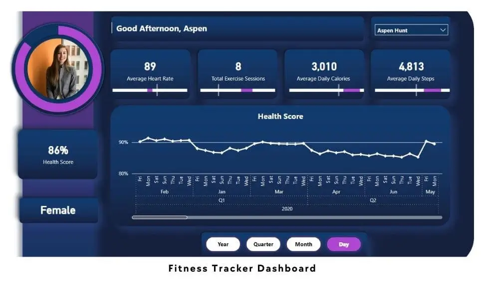

Project Details
Fitness Tracker Dashboard
Project Overview
The Fitness Tracker Dashboard on Power BI is designed to provide users with a comprehensive and user-friendly overview of their fitness data. It tracks essential metrics such as average heart rate, total exercise sessions, average daily calories burned, and average daily steps. The dashboard offers filtering options by user and allows for navigation through different time periods.

Situation
The fitness tracking dashboard aims to offer users an accessible summary of their fitness activities. By presenting key metrics and trends, it helps users monitor their progress and make informed decisions about their fitness routines.
Task
The dashboard's primary goal is to deliver a clear and informative snapshot of fitness data. This enables users to identify areas for improvement and adjust their fitness routines accordingly.
Action
The dashboard provides a detailed view of users' fitness metrics:
- Average Heart Rate: Tracks changes over time, helping users assess cardiovascular fitness.
- Total Exercise Sessions: Displays the number of exercise sessions completed within a selected period.
- Average Daily Calories: Shows the average calories burned daily, aiding in diet and exercise planning.
- Average Daily Steps: Monitors daily step counts to encourage meeting daily activity goals.
Users can filter data by individual profiles and different time periods, enabling them to observe trends and evaluate their progress.
For example, Users with a consistently low average heart rate might consider increasing the intensity of their workouts. Those not meeting their daily step goals could incorporate more walking or running into their routines.
Result
The fitness tracking dashboard empowers users to enhance their fitness journeys through:
- Identification of Improvement Areas: Users can pinpoint specific metrics where they need to improve, such as increasing workout intensity or daily steps.
- Progress Tracking: The dashboard enables users to measure their achievements over time, providing motivation and insight into their fitness progress.
- Informed Decision-Making: Users can make data-driven decisions regarding workout intensity, exercise choices, and goal-setting.
The Fitness Tracker Dashboard provides a valuable tool for users to manage and improve their fitness routines by offering actionable insights and clear visualizations of their performance metrics.